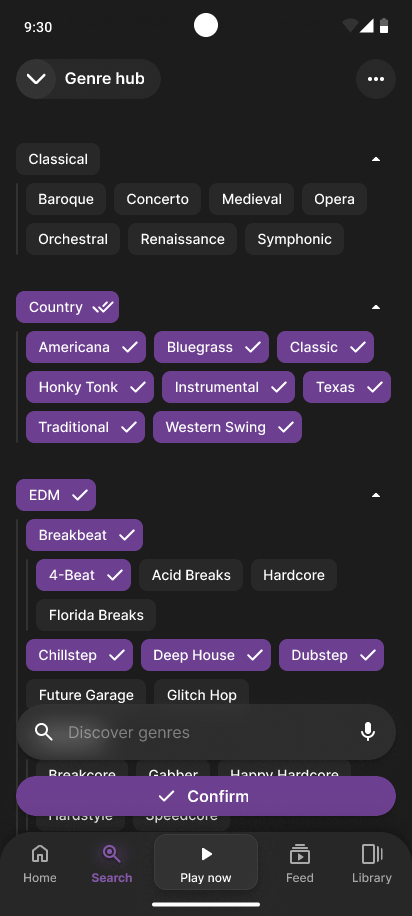
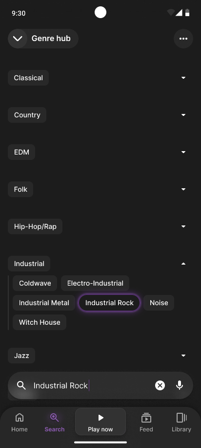
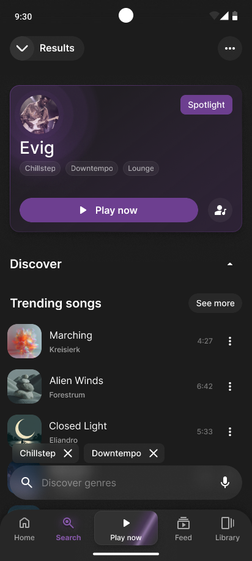
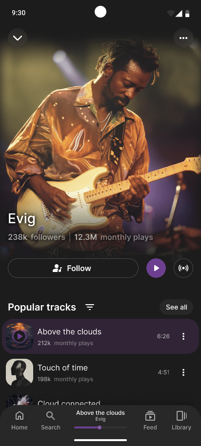
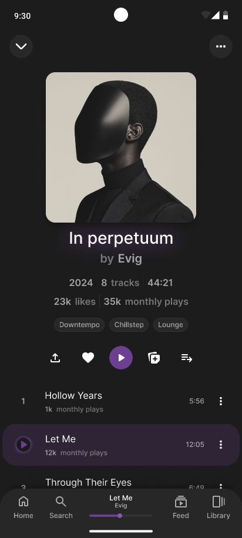
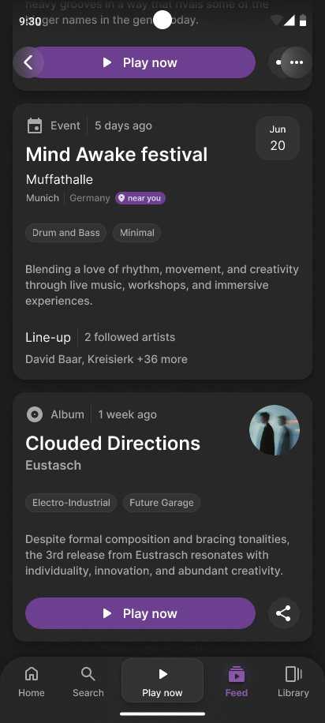
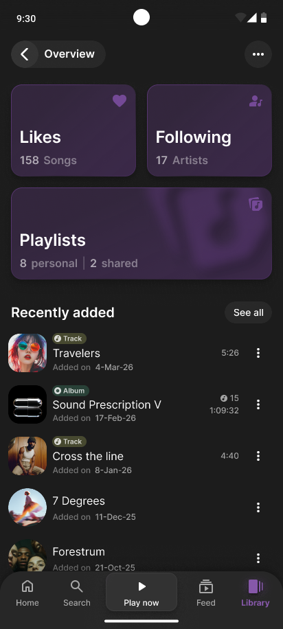
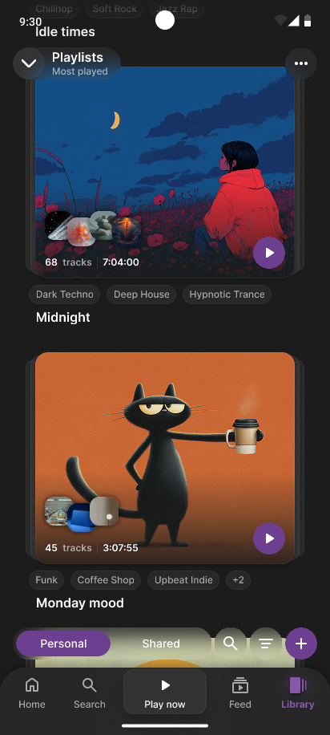

🞂 Project Overview
Concept
Sona is a premium music streaming experience designed for the music enthusiast, the individual who understands the intricate web of genres and sub-genres that define it. In an era where algorithmic playlists often flatten the musical landscape, Sona restores the joy of intentional discovery through a robust, genre-focused interface.
Why Sona?
I noticed a growing disconnect between modern streaming platforms and the users who crave deeper organization. While current apps excel at passive discovery, they often bury the specific genre data that enthusiasts use to categorize their playlists.
To validate this, I conducted a user questionnaire among friends and colleagues to identify their primary frustrations with existing services. The results were clear:
- The Top Pain Point A significant majority of respondents identified the inability to search for or explore genres in an organized, hierarchical fashion as a primary friction point in their daily use.
- The Problem Users felt that genres were treated as flat buckets rather than complex trees, making it difficult to find niche sub-genres (like Djent, Fusion-Jazz or Hardstyle) without knowing the specific artist name first.
Solution
Sona was born from the need to turn metadata into a first-class citizen. My goal was to create a cohesive environment that balances dense information with intuitive navigation:
- Intelligent TaxonomyI developed a unified Genre Hub that visualizes the relationship between parent categories and niche sub-genres. This system is powered by a "Hierarchy-Aware" search: when a user searches for a specific sub-genre, the interface automatically expands the relevant parent category while collapsing others, utilizing visual effects to provide immediate focus on the result.
- Universal Genre Context To ensure discovery is never more than a tap away, I implemented a system of Genre Pills across many components of the app. Whether browsing an Artist page, looking at Playlist cards, or viewing the Search page, these interactive chips highlight the specific sub-genres of the content, allowing users to pivot their discovery journey instantly from any screen.
- Dynamic Tab I replaced the traditional static playback bar with an expanding tab system anchored in the global navigation. This maintains the user’s "Sense of Place" while browsing; a simple upward gesture expands the playback view, while a pulsing empty state loop animation acts as a subtle CTA to keep the music flowing.
🞂 Genre Hub



The Genre Hub is the core of the Sona experience. It addresses the primary user frustration identified in my research: the lack of meaningful genre organization in modern streaming apps.
Multi-Selection Exploration
The hub is built on a hierarchical tree model that allows users to drill down into complex musical lineages.
- Intuitive Hierarchy Users can expand parent categories to reveal curated sub-genres, maintaining a clean interface while providing massive depth. Sub-genres can also behave like parents hosting other sub-genres themselves.
- Mass Selection Interactive chips allow for quick multi-selection. Users can select an entire parent category or cherry-pick niche sub-genres to create highly specific discovery results.
Hierarchy-Aware Search
To streamline the discovery of niche genres, the search function within the hub is contextually aware of the app’s taxonomy.
- Auto-Expansion When a user types a specific term the system automatically collapses irrelevant categories and expands the found parent or child genre.
- Visual Focus The targeted result is highlighted, creating a clear visual anchor that guides the user’s eye directly to their search intent.
Transition to Discovery
Once the selection is confirmed, the app transitions into a results state that maintains the Genre First philosophy.
- Dynamic Results The search results page doesn't just show songs; it prioritizes "Spotlight" artists and trending content that matches the specific genre fingerprint the user just created.
- Persistent Context The selected genre filters remain visible as interactive dismissible chips at the bottom of the screen, allowing users to tweak their selection without losing their place in the discovery scroll.
🞂 Dynamic Playback Tab
Another frustration identified in my user research was the "obstruction factor" of traditional music players. Users complained that standard floating playback bars often felt in the way, creating a cramped UI that obstructed browsing.

The Unified Player
To solve this, I transformed the static navigation bar into a living playback component. In Sona, the navigation is also the player, creating a cleaner interface that maximizes screen real estate for discovery.
By consolidating navigation and playback into the bottom 10% of the screen, I reduced UI clutter and optimized the experience for one-handed use.
- Fluid Gesture Architecture A simple upward drag on the player tab expands into a bottom sheet, eliminating the need for precision tapping and keeping all primary controls within the natural thumb zone.
- Integrated Progress Handle The playback progress bar is built directly into the tab bar. This serves as a constant status update.
- Uninterrupted Browsing By anchoring the playback engine inside the navigation layer, the user never feels like the player is an obstacle.
🞂 Consistency





To reinforce Sona's identity as a genre-first platform, I integrated interactive genre chips as a core navigation element throughout the entire ecosystem.
This persistent design language ensures that discovery is never a dead end, allowing users to explore the intricate web of musical sub-genres from any screen in the app.
- Universal Discovery Whether on an Artist profile, a curated Playlist, or within a shared Collection, these chips provide immediate context for the music being viewed.
- Frictionless Pivot Every chip is a functional shortcut. Tapping a genre instantly pivots the user to the Genre Hub Results, pre-filtered to that specific category.
- Visual Hierarchy The use chips for metadata ensures that deep information remains available without cluttering the primary visual experience of album and artist art.